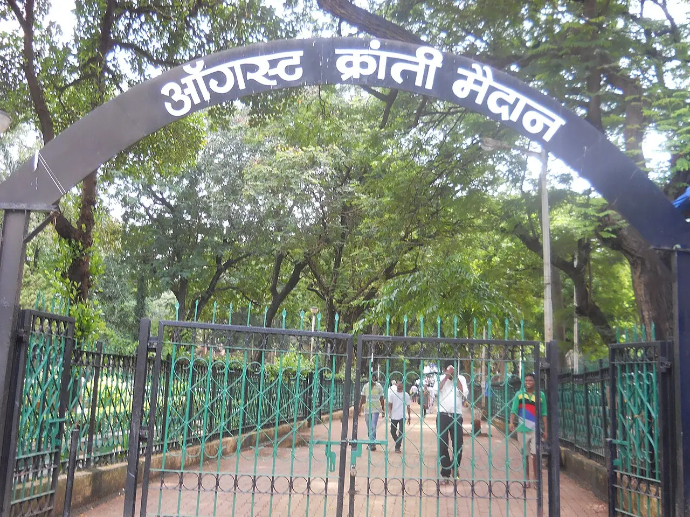
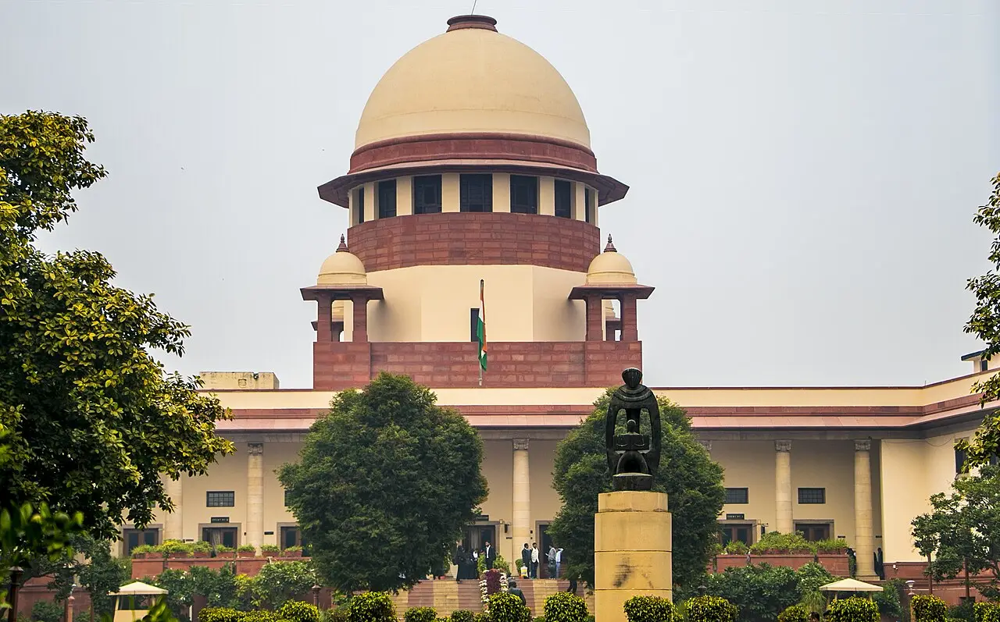
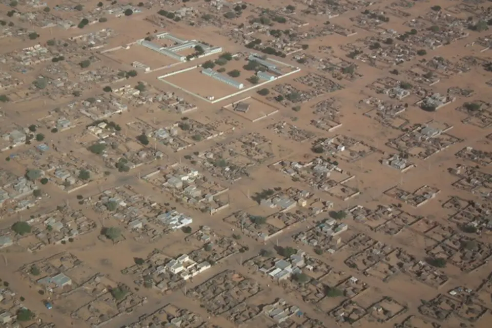
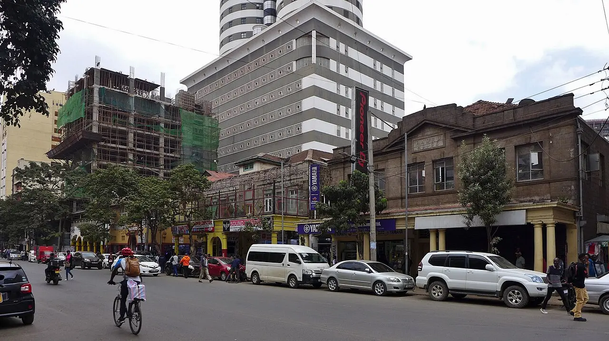

Resistance Daily
Where people's rights were at risk in the last 24 hours. Non-partisan, and every fact links to its source.

The day in numbers
7 places

East Siang police said on Monday that 26 people, five of them juveniles, are arrested over the 23 October arson in Pasighat, with six more held for questioning and eight cases filed.
India Today NE · Northeast News · India Today NE Photos and full story →

The Bombay High Court moved to Tuesday actor Imran Khan's challenge to an order to leave India by 28 October, issued after police detained him near an election-roll protest on 10 October.
LiveLaw · LiveLaw (live)

The Supreme Court on Monday issued notice to the Centre and Chhattisgarh on a tribal Christian group's challenge to the state's 2026 anti-conversion law, which requires a public declaration before changing faith.
Siasat · LiveLaw
.jpg){kind=link}
A year after the RSF captured El Fasher, Human Rights Watch says thousands of civilians may still be in RSF detention; the UN rights office estimates more than 6,000 were killed in three days of the final offensive.
HRW · Amnesty

At least five people were killed in Gaza on Monday, including four, among them 7-year-old Jouri al-Soufi, in a strike on a displacement camp in al-Mawasi, Nasser Hospital said.
Al Jazeera · RTÉ / AFP
_-_by_Pudelek.jpg){kind=link}
After weekend clashes in which police used tear gas, water cannon and rubber bullets, Prime Minister Edi Rama announced a bill to let police limit protests near public institutions, fine participants in unauthorised gatherings up to €5,000 and criminalise online calls for violence.
Balkan Insight
,_2025_(01).jpg){kind=link}
Police arrested several protesters in running battles in central Nairobi on Monday during a march against fuel prices and living costs, after petrol rose to Sh226.96 a litre.
Eastleigh Voice via allAfricaIn focus
The full storyAct today
Whatever your politicsCopy for WhatsApp
Resistance Daily, Tue 27 Oct • El Fasher: El Fasher a year on: thousands may be held • Gaza: Strike on Mawasi camp kills girl, 7 • Pasighat: 26 arrested over Pasighat violence; hunger strike • Mumbai: Actor's challenge to 'Leave India' notice deferred Sources for every fact, in the full edition: https://resistancedaily.github.io/archive/2026-10-27.html
How we report
- We cover rights, not parties: life, assembly, expression, press, due process, land.
- Every number links to its source, with ground reporting first.
- Official positions appear next to allegations; claims are labelled as claims.
- When sources disagree, we show the range. Maps show land only, with no political borders.
- Photos are freely licensed and credited. "File photo" marks an older picture of the place, not of the event. We blur protesters' and children's faces.